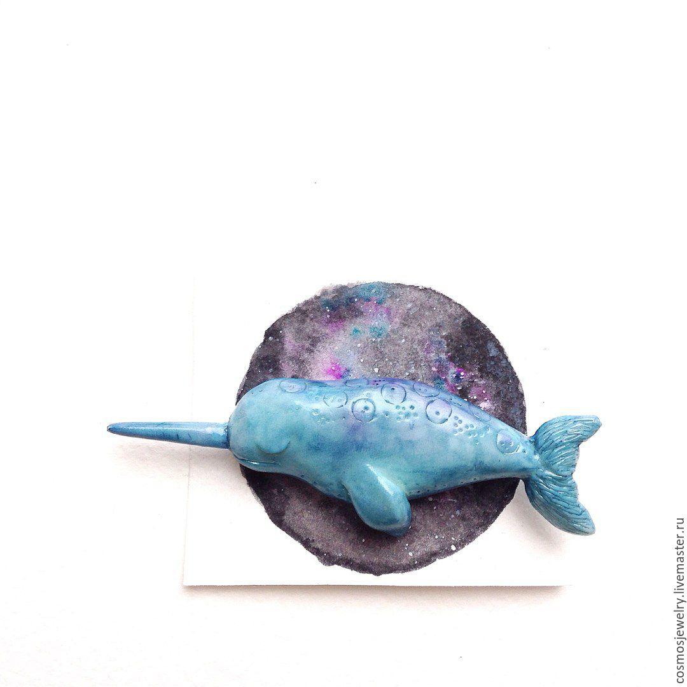

Хельга (ﾉ◕ヮ◕)ﾉ*:･ﾟ✧

Контакты:
Страничка vkontakte
GitHub
Телефон: 88005553535
E-mail: olya.olya.10@gmail.com
Снова - в рифмы
Снова - в строчки
Пускай и не всё,
Хотя бы кусочек
Тех чувств, что вмещаются в многоточия
И заставляют терять запятые.
Такие эмоции - только молчанием,
И попыткой слова пустые
Наполнить смыслом
Я только рушу
Наши истины золотые.
Эти слова - уже подзатасканные,
Рифмы подобраны предками предков;
Будь я математиком, в формулы разные
Я поместила бы все ответы,
Я бы вывела закономерности,
Начертила бы графики сердцебиения,
И нашла бы для нас исцеление
В лемнискате бесконечности.